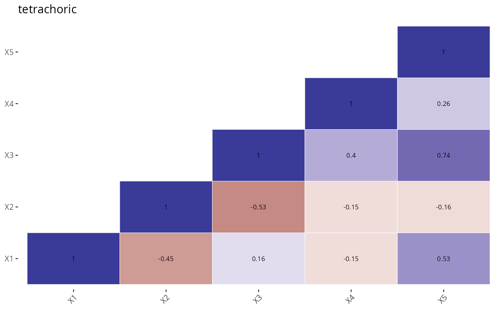

Report polychoric tetrachoric polyserial biserial correlation
Source:R/GLM_CORRELATION.R
report_choric_serial.RdReport polychoric tetrachoric polyserial biserial correlation
Arguments
- x
The input may be in one of four forms:
a) a data frame or matrix of dichotmous data (e.g., the lsat6 from the bock data set) or discrete numerical (i.e., not too many levels, e.g., the big 5 data set, bfi) for polychoric, or continuous for the case of biserial and polyserial
b) a 2 x 2 table of cell counts or cell frequencies (for tetrachoric) or an n x m table of cell counts (for both tetrachoric and polychoric)
c) a vector with elements corresponding to the four cell frequencies (for tetrachoric)
d) a vector with elements of the two marginal frequencies (row and column) and the comorbidity (for tetrachoric)- y
matrix or dataframe of discrete scores. In the case of tetrachoric, these should be dichotomous, for polychoric not too many levels, for biserial they should be discrete (e.g., item responses) with not too many (<10?) categories
- file
output filename
- w
width of pdf file
- h
height of pdf file
- type
"tetrachoric" "polychoric" "polyserial" "biserial"
- ...
arguments passed to psych::polychoric
Examples
report_choric_serial(generate_data(min=0,max=1,type="uniform"),
type="tetrachoric",file="tetrachoric")
#> Warning: Matrix was not positive definite, smoothing was done
#>

#> Call: psych::tetrachoric(x = x)
#> tetrachoric correlation
#> X1 X2 X3 X4 X5
#> X1 1.00
#> X2 -0.45 1.00
#> X3 0.16 -0.53 1.00
#> X4 -0.15 -0.15 0.40 1.00
#> X5 0.53 -0.16 0.74 0.26 1.00
#>
#> with tau of
#> X1 X2 X3 X4 X5
#> -0.52 -0.52 0.25 -0.25 -0.25
report_choric_serial(generate_data(min=1,max=5,type="uniform"),
type="polychoric")
 #> Call: psych::polychoric(x = x)
#> Polychoric correlations
#> X1 X2 X3 X4 X5
#> X1 1.00
#> X2 0.27 1.00
#> X3 -0.33 -0.10 1.00
#> X4 0.27 0.14 0.23 1.00
#> X5 -0.71 -0.19 -0.27 -0.41 1.00
#>
#> with tau of
#> 1 2 3 4
#> X1 -0.52 0.25 0.84 1.28
#> X2 -0.84 0.25 0.52 0.84
#> X3 -0.52 -0.25 -0.25 0.52
#> X4 -0.52 -0.25 0.00 0.25
#> X5 -0.25 0.00 0.52 0.84
report_choric_serial(x=psych::lsat6,y=psych::lsat6,
type="polyserial",file="polyserial")
#> Q1 Q2 Q3 Q4 Q5
#> Q1 1.00000 0.1368 0.18325 0.08203 0.04409
#> Q2 0.09778 1.0000 0.15207 0.08253 0.11422
#> Q3 0.12433 0.1443 1.00000 0.13715 0.06685
#> Q4 0.06097 0.0858 0.15023 1.00000 0.13667
#> Q5 0.03782 0.1371 0.08452 0.15774 1.00000
report_choric_serial(x=psych::lsat6,y=psych::lsat6,
type="biserial",file="biserial")
#> Warning: For x = 1 y = 1 x seems to be dichotomous, not continuous
#> Warning: For x = 2 y = 2 x seems to be dichotomous, not continuous
#> Warning: For x = 3 y = 3 x seems to be dichotomous, not continuous
#> Warning: For x = 4 y = 4 x seems to be dichotomous, not continuous
#> Warning: For x = 5 y = 5 x seems to be dichotomous, not continuous
#>
#> Call: psych::polychoric(x = x)
#> Polychoric correlations
#> X1 X2 X3 X4 X5
#> X1 1.00
#> X2 0.27 1.00
#> X3 -0.33 -0.10 1.00
#> X4 0.27 0.14 0.23 1.00
#> X5 -0.71 -0.19 -0.27 -0.41 1.00
#>
#> with tau of
#> 1 2 3 4
#> X1 -0.52 0.25 0.84 1.28
#> X2 -0.84 0.25 0.52 0.84
#> X3 -0.52 -0.25 -0.25 0.52
#> X4 -0.52 -0.25 0.00 0.25
#> X5 -0.25 0.00 0.52 0.84
report_choric_serial(x=psych::lsat6,y=psych::lsat6,
type="polyserial",file="polyserial")
#> Q1 Q2 Q3 Q4 Q5
#> Q1 1.00000 0.1368 0.18325 0.08203 0.04409
#> Q2 0.09778 1.0000 0.15207 0.08253 0.11422
#> Q3 0.12433 0.1443 1.00000 0.13715 0.06685
#> Q4 0.06097 0.0858 0.15023 1.00000 0.13667
#> Q5 0.03782 0.1371 0.08452 0.15774 1.00000
report_choric_serial(x=psych::lsat6,y=psych::lsat6,
type="biserial",file="biserial")
#> Warning: For x = 1 y = 1 x seems to be dichotomous, not continuous
#> Warning: For x = 2 y = 2 x seems to be dichotomous, not continuous
#> Warning: For x = 3 y = 3 x seems to be dichotomous, not continuous
#> Warning: For x = 4 y = 4 x seems to be dichotomous, not continuous
#> Warning: For x = 5 y = 5 x seems to be dichotomous, not continuous
#>
 #> Q1 Q2 Q3 Q4 Q5
#> Q1 1.00000 0.13671 0.18316 0.08199 0.04406
#> Q2 0.09773 1.00000 0.15200 0.08249 0.11416
#> Q3 0.12427 0.14426 1.00000 0.13708 0.06682
#> Q4 0.06094 0.08576 0.15016 1.00000 0.13660
#> Q5 0.03780 0.13699 0.08448 0.15766 1.00000
#> Q1 Q2 Q3 Q4 Q5
#> Q1 1.00000 0.13671 0.18316 0.08199 0.04406
#> Q2 0.09773 1.00000 0.15200 0.08249 0.11416
#> Q3 0.12427 0.14426 1.00000 0.13708 0.06682
#> Q4 0.06094 0.08576 0.15016 1.00000 0.13660
#> Q5 0.03780 0.13699 0.08448 0.15766 1.00000